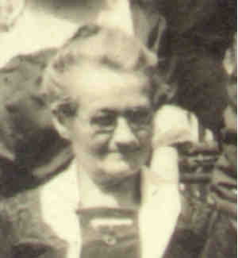

|
|
|
|
|
|
 Agnes IMLING (1869-1943) |
Agnes IMLING 1
• Emigration, 1884. 7 • Census: 1900, 4 Jun 1900, Pittsburgh, Allegheny, PA. 4 • Census: 1910, 21 Apr 1910, Pittsburgh, Allegheny, PA. 2 • Census: 1920, 12 Jan 1920, Pittsburgh, Allegheny, PA. 7 • Census: 1930, 14 Apr 1930, Bedford, Bedford, PA. 8 Agnes married Vendelin KUNDT, son of Vendelin KUNDT and Margaret GEDEON, on 19 May 1892 in Pittsburgh, Allegheny, PA.1 2 (Vendelin KUNDT was born on 6 Jan 1870 in Unter-Metzenseifen, Austria-Hungary 2 3, baptized on 8 Jan 1870 in Unter-Metzenseifen, Austria-Hungary,3 died on 23 Nov 1937 in Bedford, Bedford, PA 5 9 and was buried on 26 Nov 1937 in St. Thomas Cemetery, Bedford, Bedford, PA 5 9.) |
1 Church of Jesus Christ of Latter Day Saints, FamilySearch® International Genealogical Index (Salt Lake City, Utah, Intellectual Reserve, 2001, http://www.familysearch.org).
2 Pennsylvania, Allegheny County, 1910 U.S. Census, Population Schedule (Washington, D.C., National Archives and Records Administration), ED 515, Sheet 9, Line 31.
3 St. Mary Queen of Angels Parish Register, Christening Records, 1863-1885 (Unter Metzenseifen, Slovakia (LDS Film 1923140)).
4 Pennsylvania, Allegheny County, 1900 U.S. Census, Population Schedule (Washington, D.C., National Archives and Records Administration), ED 453, Sheet 4, Line 91.
5 Richard Kund, Letter to Thomas Hoey (Willow Grove, PA, 12 Mar 2001).
6 The Bedford Gazette, Agnes Imling Kund Obituary (Bedford, PA, 31 Dec 1943).
7 Pennsylvania, Allegheny County, 1920 U.S. Census, Population Schedule (Washington, D.C., National Archives and Records Administration), ED 612, Sheet 8, Line 54.
8 Pennsylvania, Bedford County, 1930 U.S. Census, Population Schedule (Washington, D.C., National Archives and Records Administration), ED 5-1, Sheet 11, Line 93.
9 Commonwealth of Pennsylvania, Department of Health, Bureau of Vital Statistics, Pennsylvania Death Certificates, 1906-1970 (Harrisburg, PA (via Ancestry.com)), Wendelin Kund Sr. (filed 24 Nov 1937).